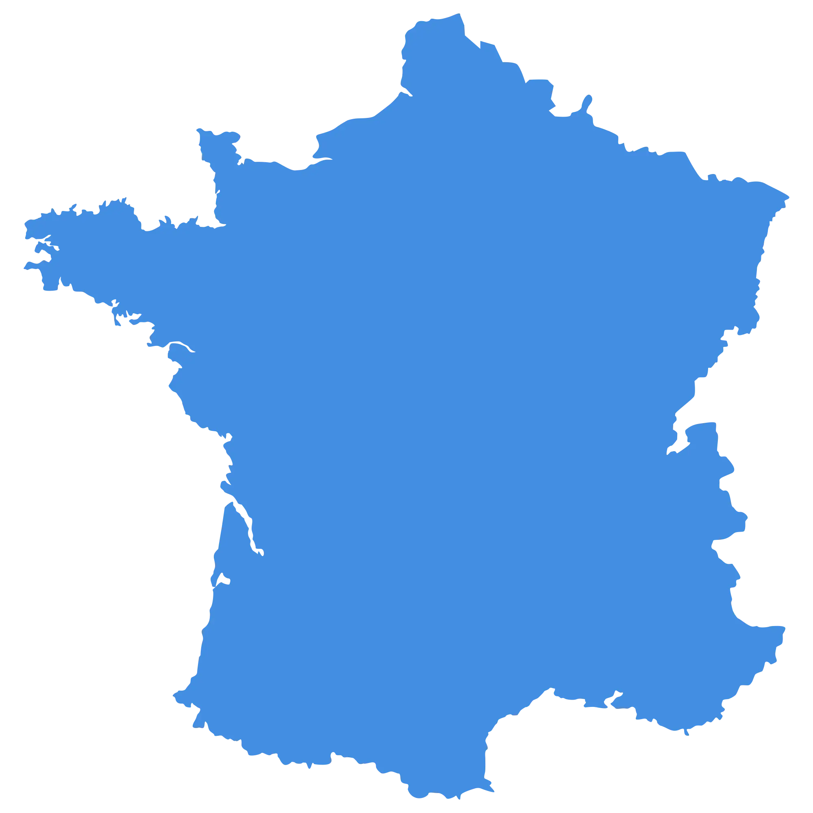

Notre projet de Recherche
Cette section présente les objectifs, la multimodalité et l'interdisciplinarité du projet SAM-GuideObjectifs
SAM-Guide vise à améliorer la qualité de vie des personnes qui présentent un handicap visuel en leur fournissant des outils technologiques leur permettant d’interagir avec leur environnement de façon autonome. Le projet repose sur trois axes fondamentaux : la navigation sans assistance humaine, l’atteinte d’objets dans l’espace proche ou éloigné, et la participation à des activités physiques telles que le laser-run. Chacune de ces dimensions répond à des besoins concrets exprimés par les usagers, en complémentarité avec les formations à la mobilité existantes.
Multimodalité
En combinant les retours tactiles vibrants avec des sons directionnels (spatialisés) et des sons d’information (non-spatialisés), SAM-Guide adopte une approche multimodale pour transmettre des repères dans l’espace. Cette complémentarité permet d’éviter la surcharge d’un seul sens, tout en facilitant la compréhension et l’apprentissage. Les sons spatialisés aident à localiser une direction ou un objet dans l’environnement, tandis que les sons non-spatialisés délivrent des messages simples et clairs (ex. : "objectif atteint", "stop"). Grâce à cette combinaison, l’utilisateur peut se déplacer plus facilement, adapter ses gestes en temps réel, et gagner en autonomie.
Interdisciplinarité
Le projet repose sur une collaboration étroite entre plusieurs disciplines : neurosciences cognitives, informatique embarquée, mathématiques appliquées, psychologie ergonomique et ingénierie des systèmes. Réunies dans un consortium national (Université Grenoble Alpes, ENS Paris-Saclay, Université de Rouen et Université de Caen), ces expertises permettent d’aborder les défis techniques et humains de manière globale. L'interdisciplinarité garantit des solutions plus robustes, évolutives, et centrées sur les usages réels, en s’appuyant sur des tests utilisateurs, des scénarios immersifs, et des technologies validées scientifiquement.
Notre Consortium National
Survolez les régions pour découvrir nos partenaires
Utilisez la touche Tab pour naviguer entre les universités partenaires
Rouen
Université de Rouen
- Spécialité : Navigation adaptée
- Recherche : Psychologie cognitive
- Contribution : Ergonomie interfaces
- Focus : Expérience utilisateur
- Site : www.univ-rouen.fr (s'ouvre dans un nouvel onglet)
Caen
Université de Caen
- Spécialité : Mobilité assistée
- Recherche : Sciences comportementales
- Contribution : Validation terrain
- Focus : Accessibilité
- Site : www.unicaen.fr/
Paris
ENS Paris-Saclay
- Spécialité : Spatialisation sonore
- Recherche : Audio binaural
- Contribution : Algorithmes audio 3D
- Focus : Perception auditive
- Site : www.ens-paris-saclay.fr
Grenoble
Université Grenoble Alpes
- Spécialité : Systèmes interactifs
- Recherche : Informatique embarquée
- Contribution : Développement hardware
- Focus : Intégration technologique
- Site : www.univ-grenoble-alpes.fr